square 50 islands · seed42
square 50 continent · seed42
square 300 coast · seed42
square 300 islands · seed42
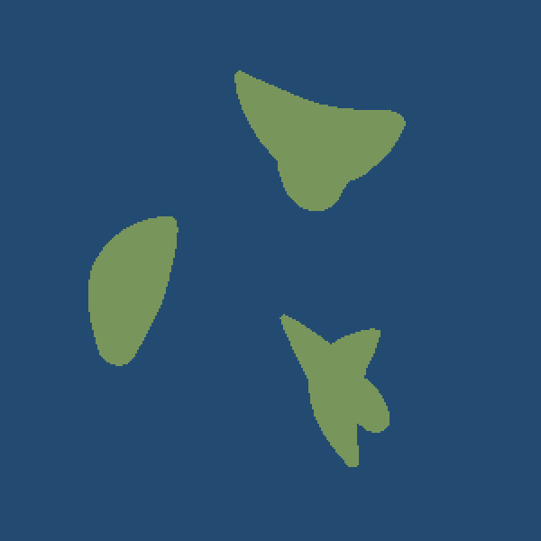
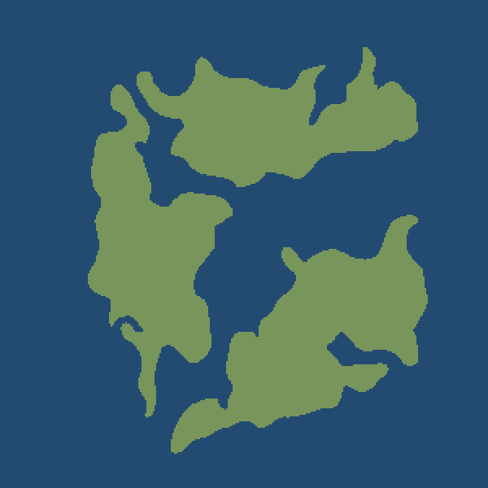
square 300 continent · seed42
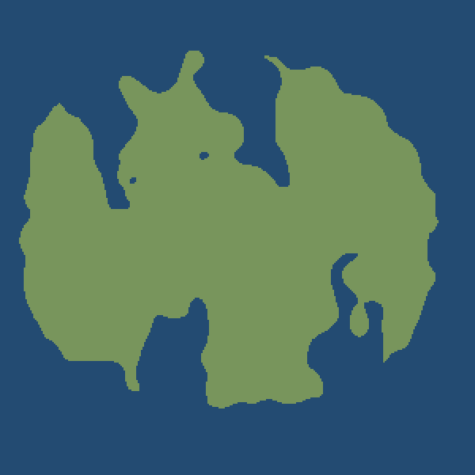
hex 50 coast · seed42
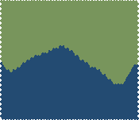
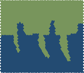
hex 50 islands · seed42
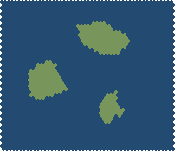
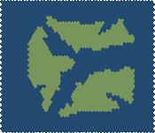
hex 50 continent · seed42
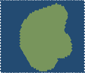
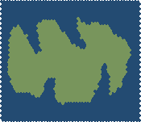
hex 300 coast · seed42
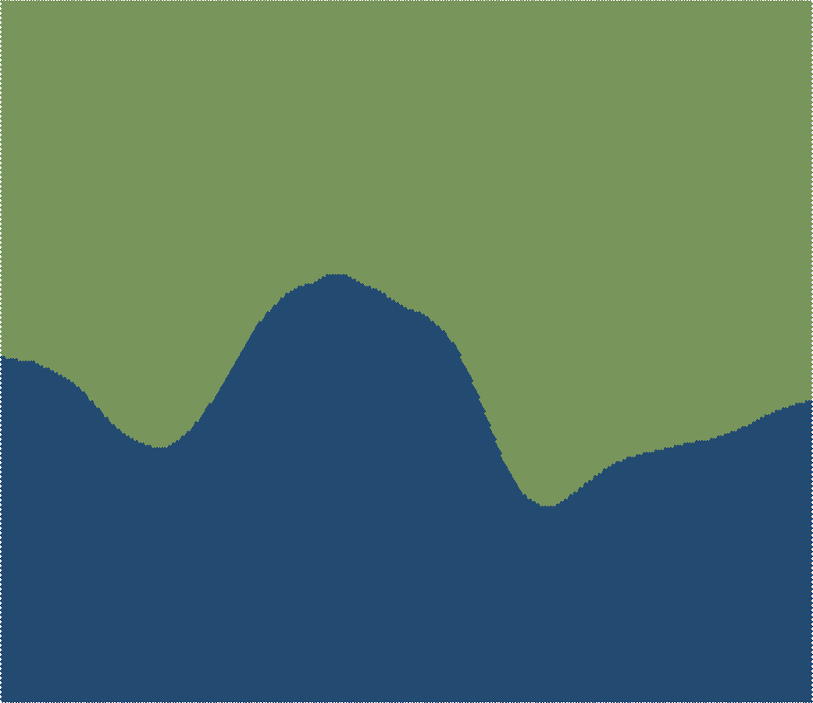
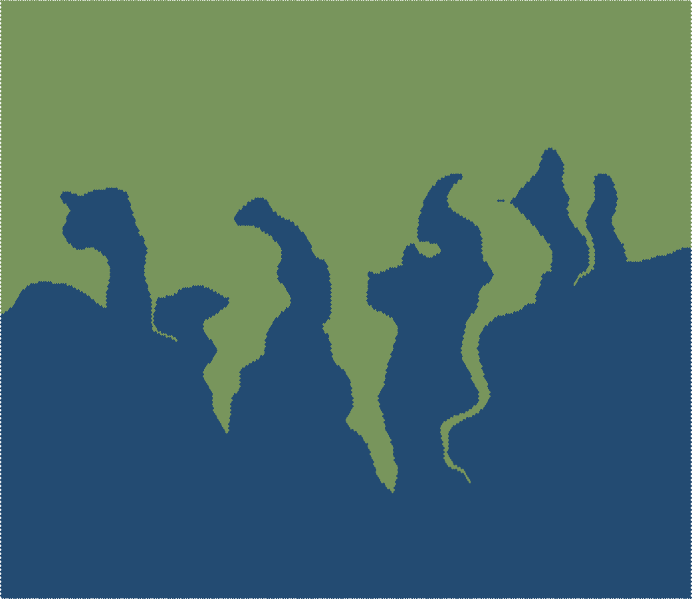
hex 300 islands · seed42
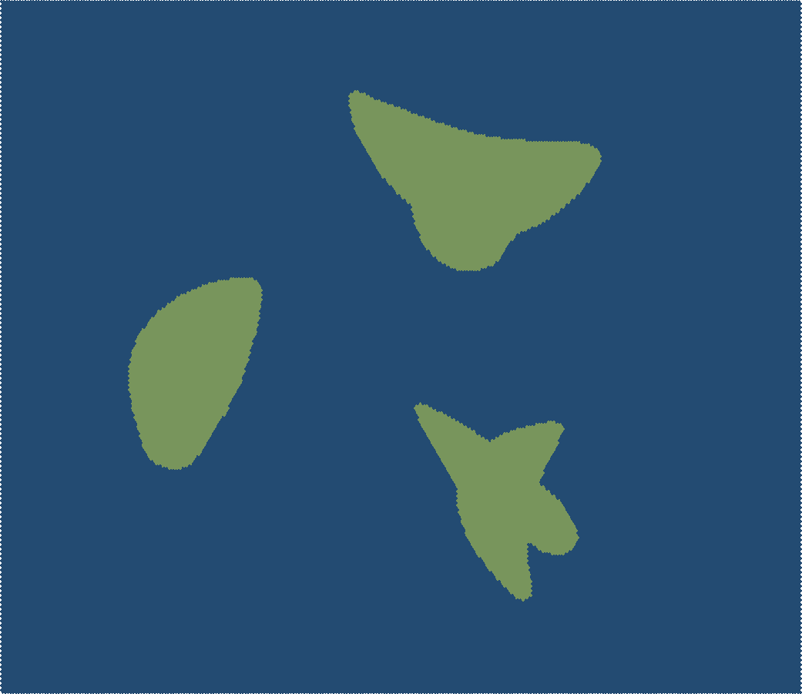
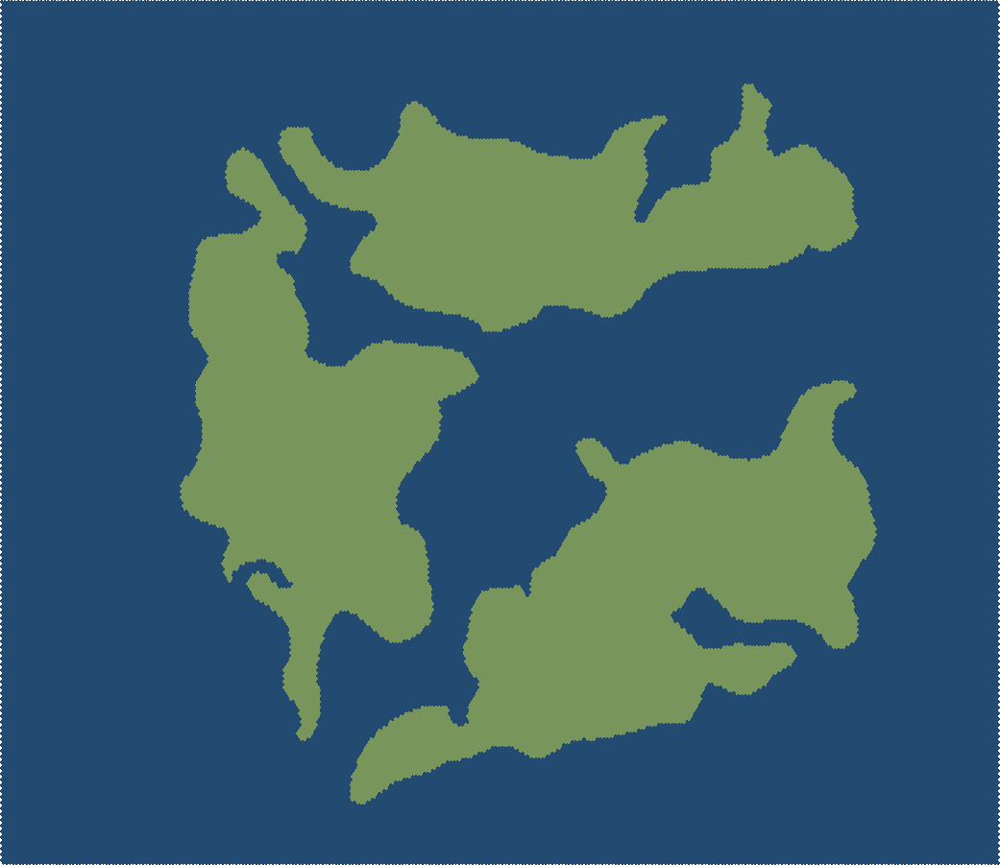
hex 300 continent · seed42
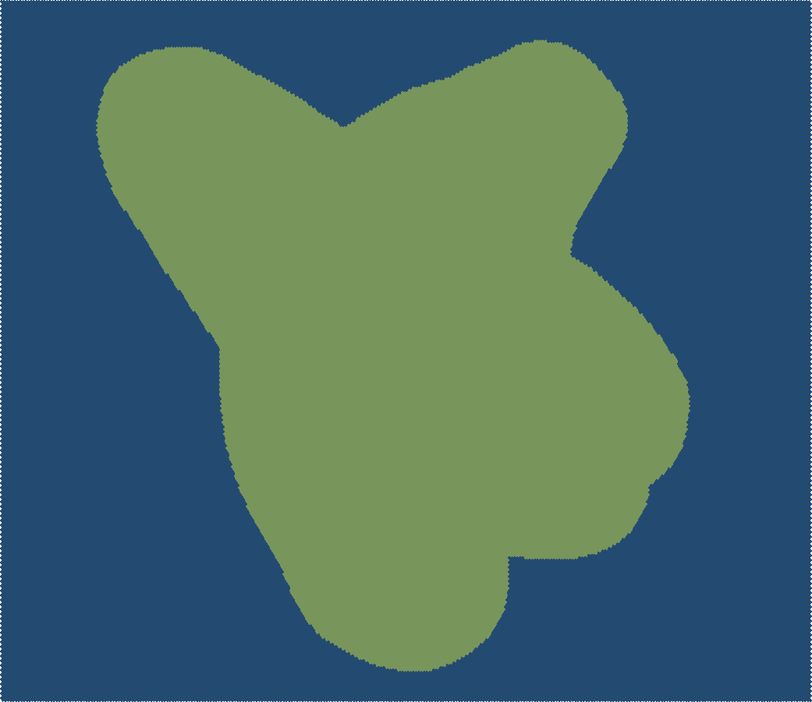
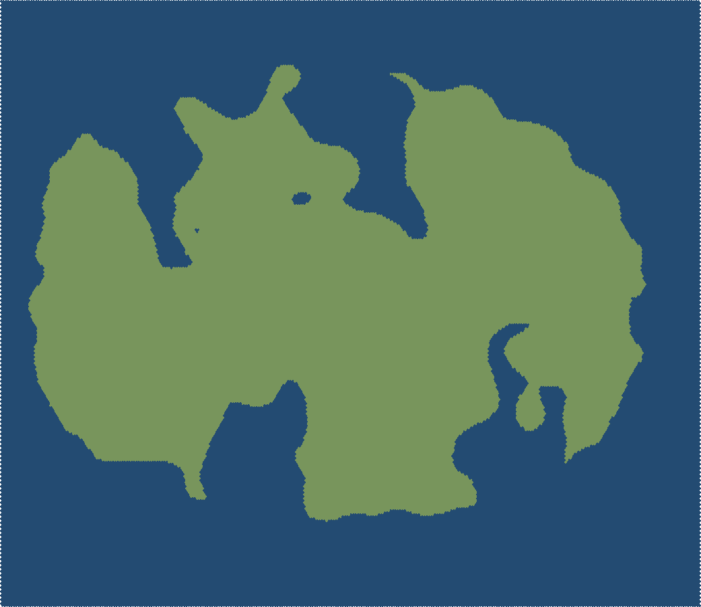